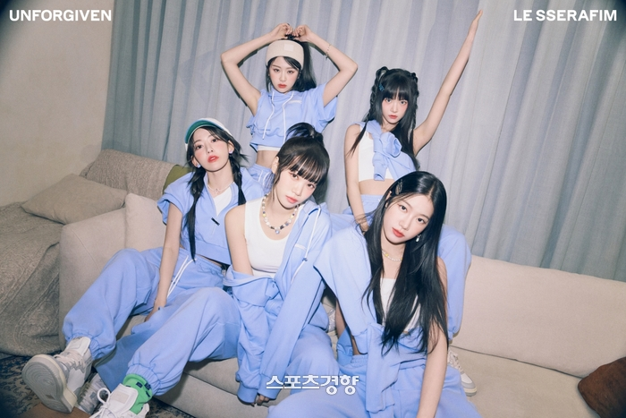

르세라핌, 빌보드 12주 연속 차트인…후속곡 상승세

르세라핌(LE SSERAFIM)의 정규 1집 ‘UNFORGIVEN’이 미국 빌보드에서 세 달째 존재감을 뽐내고 있다.
미국 음악 전문 매체 빌보드가 지난 25일(현지시간) 발표한 최신 차트(7월 29일 자)에 따르면,
르세라핌(김채원, 사쿠라, 허윤진, 카즈하, 홍은채)의 신보는 ‘월드 앨범’ 7위, ‘톱 커런트 앨범 세일즈’ 22위,
‘톱 앨범 세일즈’ 32위를 차지했다.
타이틀곡 ‘UNFORGIVEN (feat. Nile Rodgers)’은 ‘빌보드 글로벌(미국 제외)’ 80위,
‘빌보드 글로벌 200’ 143위에 안착하며 12주 연속 차트인했다. 수록곡 ‘이브, 프시케 그리고 푸른 수염의 아내’는
‘빌보드 글로벌(미국 제외)’ 37위, ‘빌보드 글로벌 200’ 69위로 지난주 대비 각각 4계단, 16계단 순위를 끌어올렸다.
빌보드 차트에서 식을 줄 모르는 인기를 자랑하고 있는 ‘이브, 프시케 그리고 푸른 수염의 아내’의 흥행 불씨는 꺼지지 않을 전망이다.
허윤진이 직접 가사를 번역한 영어 버전, ‘팝의 넥스트 잇 걸’ 업살(UPSAHL)이
피처링에 참여한 리믹스 등을 발매하며 꾸준히 화제를 모으고 있다.
한편, 르세라핌은 지난 25일 일본 싱어송라이터 이마세(imase)와 협업한
‘Jewelry (Prod. imase)’를 발매했다. 이 곡은 오는 8월 23일 발매 예정인 일본 싱글 2집의 수록곡으로
숏폼 ‘댄스 챌린지 최강자’ 르세라핌과 이마세의 만남으로 뜨거운 호응을 얻고 있다.